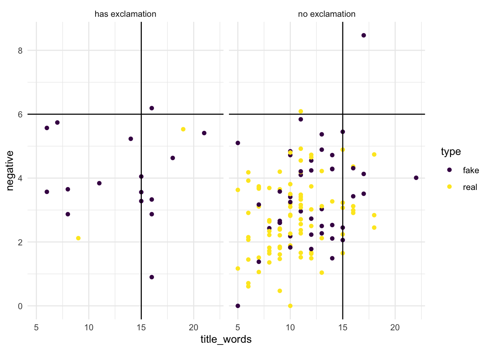

library(bayesrules)
library(tidyverse)
library(e1071)
library(janitor)Naive Bayes Classification Assignment
Assignment Description
This assignment is designed to test your knowledge of Naive Bayes Classification. It closely mirrors our naive_bayes_penguins.qmd from lectures 10/1 and 10/3. We reflect back on the true vs fake news dataset from the beginning of the semester and apply the new skills in our bayesian toolbox.
This assignment is worth 16 points and is due by 10:00am on October 15th. Each section has a number of points noted. To turn in this assignment, render this qmd and save it as a pdf, it should look beautiful. If you do not want warning messages and other content in the rendered pdf, you can use message = FALSE, warning = FALSE at the top of each code chunk as it appears in the libraries code chunk below.
Load Libraries
Read in data
data(fake_news)Challenge
Exercise 14.7 Fake news: three predictors
Suppose a new news article is posted online – it has a 15-word title, 6% of its words have negative associations, and its title doesn’t have an exclamation point. We want to know if it is fake or real
Visualization (Exploratory Data Analysis) - 2 points
Below, insert a code chunk(s) and use ggplot to visualize the features of the data we are interested in. This can be one or multiple visualizations
Type (fake vs real)
Number of words in the title (numeric value)
Negative associations (numeric value)
Exclamation point in the title (true vs false)
Mutate Data to make sense of labels for title_has_excl column
fake_news <- fake_news %>%
mutate(title_has_excl = ifelse(title_has_excl, "has exclamation", "no exclamation"))ggplot(fake_news, aes(x = title_words, y = negative, color = type)) +
geom_point() +
facet_wrap(~title_has_excl) +
theme_minimal() +
scale_color_viridis_d() +
geom_hline(yintercept = 6) +
geom_vline(xintercept = 15)
Interpretation of Visualization - 2 points
Below, write a few sentences explaining whether or not this new news article is true or fake solely using your visualization above
Based on my visualization, I would say that its more likely to be fake based on the visual above. The data points that meet the requirements in the fake articles are closest to the “threshold”/predictors we are using.
Perform Naive Bayes Classification - 3 points
Based on these three features (15-word title, 6% of its words have negative associations, and its title doesn’t have an exclamation point), utilize naive Bayes classification to calculate the posterior probability that the article is real. Do so using naiveBayes() with predict().
Below, insert the code chunks and highlight your answer
naive_model_hints <- naiveBayes(type ~ negative + title_words + title_has_excl, data = fake_news)Our Article
our_article <- data.frame(negative = 6, title_words = 15, above_average_weight = "no exclamation")Making the Prediction
predict(naive_model_hints, newdata = our_article, type = "raw") fake real
[1,] 0.9052846 0.09471539Break Down the Model - 5 points
Similar to the penguins example, we are going to break down the model we created above. To do this we need to find:
Probability(15 - word title| article is real) using
dnorm()Probability(6% of words have negative associations | article is real) using
dnorm()Probability(no exclamation point in title | article is real)
- Multiply these probabilities and save as the object
probs_real
- Multiply these probabilities and save as the object
Probability(15 - word title| article is fake) using
dnorm()Probability(6% of words have negative associations | article is fake) using
dnorm()Probability(no exclamation point in title | article is fake)
- Multiply these probabilities and save as the object
probs_fake
- Multiply these probabilities and save as the object
Lastly divide your probs_real by the sum of probs_real and probs_fake to see if you can reproduce the output from naiveBayes() above
naive_model_hints
Naive Bayes Classifier for Discrete Predictors
Call:
naiveBayes.default(x = X, y = Y, laplace = laplace)
A-priori probabilities:
Y
fake real
0.4 0.6
Conditional probabilities:
negative
Y [,1] [,2]
fake 3.606333 1.466429
real 2.806556 1.190917
title_words
Y [,1] [,2]
fake 12.31667 3.743884
real 10.42222 3.204554
title_has_excl
Y has exclamation no exclamation
fake 0.26666667 0.73333333
real 0.02222222 0.97777778Article Type
fake_news %>%
tabyl(type) type n percent
fake 60 0.4
real 90 0.6Word Title given Article is Real
dnorm(15, mean = 10.42222, sd = 3.204554)[1] 0.04487606Words have negative associations given Article is Real
dnorm(6, mean = 2.806556, sd = 1.190917)[1] 0.00919695Title has no Exclamation Point given Article is Real
fake_news %>%
tabyl(type, title_has_excl) %>%
adorn_percentages("row") type has exclamation no exclamation
fake 0.26666667 0.7333333
real 0.02222222 0.9777778P(article is real) * P(article is real | 15 word title) * P(article is real | 6% word have negative associations) * P(no exclamation point in title | article is real)
probs_real <- (90/150) * 0.04487606 * 0.00919695 * .98
probs_real[1] 0.0002426811Title has 15 Words is fake given Article is Fake
dnorm(15, mean = 12.31667, sd = 3.743884)[1] 0.08242154Negative word associations given Article is fake
dnorm(6, mean = 3.606333, sd = 1.466429)[1] 0.07179166P(article is fake) * P(article is fake | 15 word title) * P(article is fake | 6% word have negative associations) * P(no exclamation point in title | article is fake)
probs_fake <- (60/150) * 0.02646231 * 0.08686077 * .73
probs_fake[1] 0.0006711727Confusion Matrix - 2 points
Calculate a confusion matrix by first mutating a column to fake_news called predicted_type . Then, use tabyl() to create the matrix
fake_news <- fake_news %>%
mutate(predicted_type = predict(naive_model_hints, newdata = .))fake_news %>%
tabyl(type, predicted_type) %>%
adorn_percentages("row") %>%
adorn_pct_formatting(digits = 2) %>%
adorn_ns type fake real
fake 48.33% (29) 51.67% (31)
real 12.22% (11) 87.78% (79)How can our model be improved? - 2 points
Think about the results of the confusion matrix, is the model performing well? Try creating a new model that uses all of the features in the fake_news dataset to make a prediction on type (fake vs true). Then, create a new confusion matrix to see if the model improves.
No, the model is not perfoming well. The False positives is a relatively high number. 51.67% is a number that can also be caused do the sample size of our data. This data is relatively small which may lead to a possibility of under fitting. When looking back at the first visual, we can also see that it was a little difficult to predict that article is fake given the parameters that we are looking at. We can also see that the model predicting an article is fake can be caused by the reason previously mentioned as the accuracy score is 48.33%.
Creating model using all columns
fake_news_mod <- naiveBayes(type ~ ., data = fake_news)Making Prediction
fake_news <- fake_news %>%
mutate(predicted_type = predict(fake_news_mod, newdata = .))Printing the Confusion Matrix
fake_news %>%
tabyl(type, predicted_type) %>%
adorn_percentages("row") %>%
adorn_pct_formatting(digits = 2) %>%
adorn_ns type fake real
fake 96.67% (58) 3.33% (2)
real 2.22% (2) 97.78% (88)